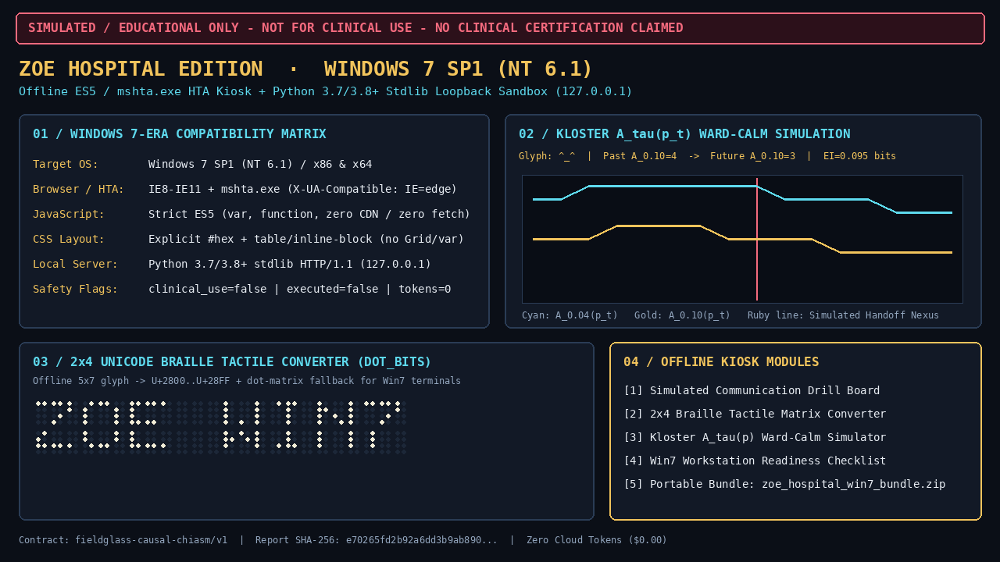

Offline ES5/HTA Kiosk & Python 3.7/3.8+ Stdlib Loopback Sandbox for Legacy Healthcare Workstations · Minimum Target: Windows 7 SP1 (NT 6.1)
|
Contract
fieldglass-causal-chiasm/v1
|
Chiasm Presence (16 episodes)
^_^ (4 → 3)
|
Effective Information
0.0954 bits
|
Safety & Cost Flags
clinical_use=false
executed=false | tokens=0 |
| Component | Target Win7 Runtime | Compatibility Guard | Artifact |
|---|---|---|---|
| Offline HTML Kiosk | IE8, IE9, IE10, IE11 & Modern Browsers | Strict ES5 JS (var/function), IE8 attachEvent/innerText shims, explicit hex CSS + table/inline-block layouts, zero CDNs | zoe_hospital_kiosk.html |
| Native Win7 Desktop App | mshta.exe (Windows 7 SP1 Built-In) | <meta http-equiv="X-UA-Compatible" content="IE=edge" /> + declarative <HTA:APPLICATION> (no COM JS access) | zoe_hospital_kiosk.hta |
| Local Loopback Server | Python 3.7 / 3.8+ (Stdlib Only) | Py 3.7+ AST clean, zero third-party deps, 127.0.0.1 loopback-only, HTTP/1.1 exact Content-Length, zero ANSI escapes | zoe_hospital_win7.py |
| Workstation Launcher | Windows 7 cmd.exe (cp437 / cp1252) | CRLF line endings, probes py -3 / python >= 3.7, automatic fallback to mshta.exe or default browser | launch_win7.bat |

| Artifact | Purpose |
|---|---|
| zoe_hospital_kiosk.html | Offline ES5 interactive kiosk (Communication Board, 2x4 Braille, A_tau(p), Checklist) |
| zoe_hospital_kiosk.hta | Windows 7 mshta.exe desktop application wrapper |
| zoe_hospital_win7.py | Standalone Python 3.7/3.8+ stdlib loopback server |
| launch_win7.bat | Windows 7 CRLF batch launcher |
| chiasm_tomography.svg | Causal Chiasm & Persistent Filtration Tomography vector diagram |
| chiasm_report.json | SHA-256 sealed fieldglass-causal-chiasm/v1 telemetry report |
| manifest.json | SHA-256 package manifest & runtime compatibility flags |
| summary.json | Observatory summary metadata for programmatic integration |
| README_WIN7.txt | Plain-text Windows 7 deployment & non-clinical guide |
| zoe_hospital_win7_bundle.zip | Portable offline ZIP package (< 5 MB) |